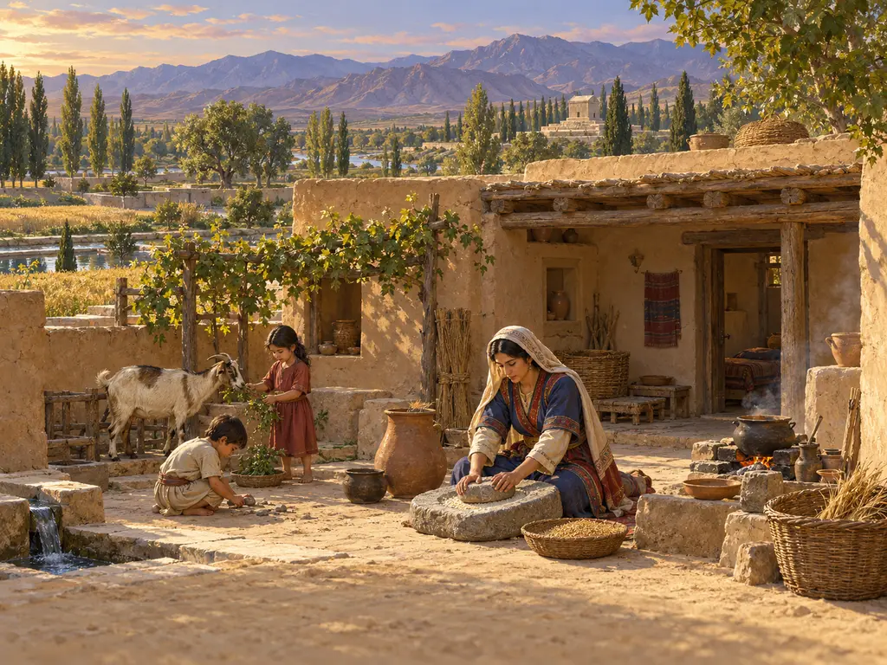
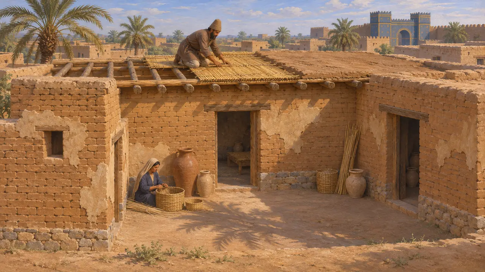
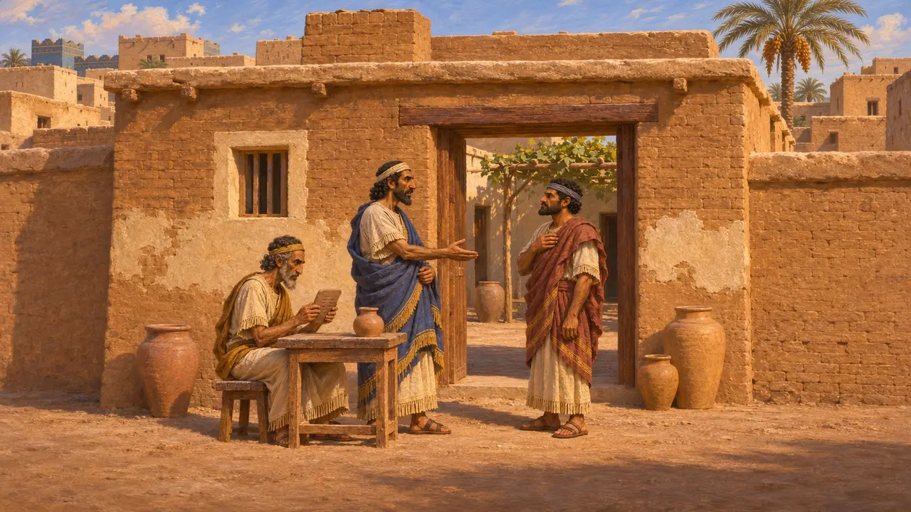
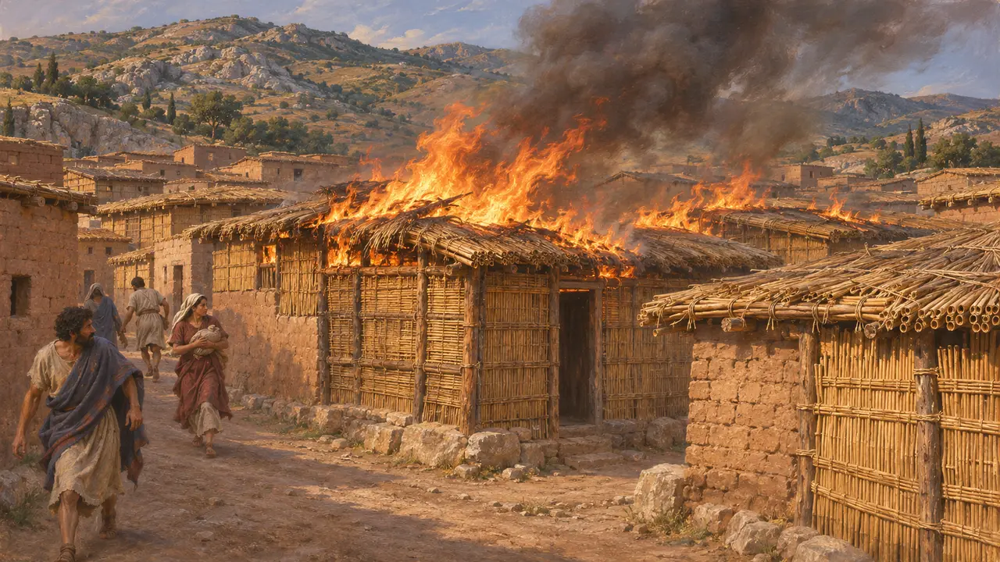
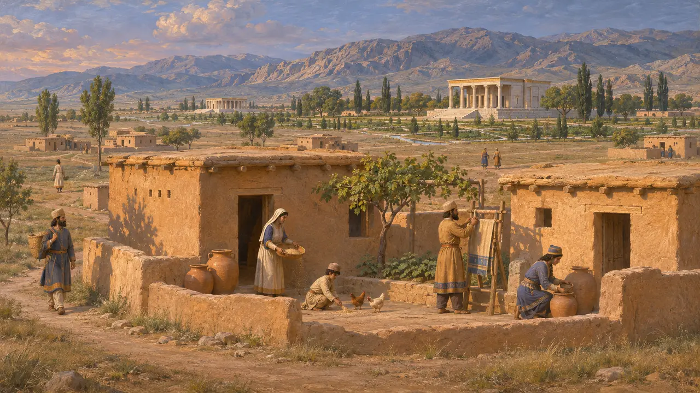
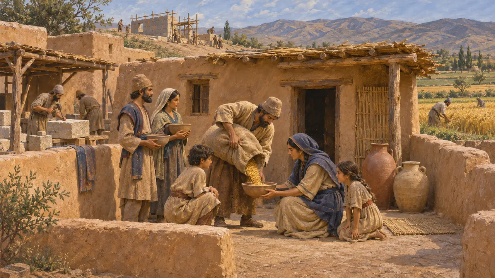

Lotto abitativo
Abitazioni comuni dell'impero achemenide, 559-479 a.C. circa
La maggior parte degli abitanti dell'impero persiano viveva in semplici case di mattoni crudi, canne e legno, spesso costruite attorno a un cortile e coperte da tetti piani di terra battuta. I re lasciarono palazzi di pietra e iscrizioni. Le dimore di contadini, artigiani e braccianti sono note soprattutto da una manciata di scavi, da contratti commerciali e da qualche osservazione di scrittori greci.
Nel gioco: I coloni costruiscono una capanna, che cresce man mano che vi giungono acqua, cibo, culto e salute. Si tratta di una semplificazione di gioco: nella realtà le case non miglioravano grazie ai servizi, e la dimora di una famiglia dipendeva dalla terra, dal reddito e dai suoi obblighi verso il Re.

Mattoni crudi, canne e legno
Nelle fontiGli scavi mostrano che le case comuni erano costruite in mattoni crudi essiccati al sole, spesso su un basso zoccolo di pietra, con travi di legno e stuoie di canne sotto un tetto piano di terra. A Susa, Roman Ghirshman scavò un quartiere di case modeste che datò all'epoca persiana, anche se studi successivi hanno messo in dubbio quanta parte di esso sia davvero così antica. Nel quartiere Merkes di Babilonia, le case erano costruite attorno a un cortile interno che dava luce e aria alle stanze.
R. Ghirshman, Village perse-achéménide, 1954

Le case nei contratti babilonesi
Nelle fontiLe tavolette d'argilla degli archivi familiari babilonesi, come quello della famiglia Egibi, registrano case vendute, affittate e date in pegno a garanzia di prestiti sotto Ciro, Cambise e Dario. I contratti riportano affitti, confini e nomi dei vicini. Mostrano che una casa in una grande città era una proprietà che si poteva comprare, affittare o ereditare.
K. Abraham, Business and Politics under the Persian Empire, 2004

Le case di canne di Sardi
Racconto anticoErodoto racconta che gli Ioni, in una scorreria condotta con i loro alleati ateniesi ed eretriesi, incendiarono Sardi nel 498. Spiega che il fuoco si propagò rapidamente perché la maggior parte delle case della città era fatta di canne, e persino quelle di mattoni avevano tetti di canne. Nel suo racconto bastò dare fuoco a una sola casa perché le fiamme corressero di tetto in tetto per tutta la città.
Herodotus 5.101

Dove viveva la gente delle città reali
ContesoPasargade e Persepoli sono note per i loro palazzi, ma dove vivessero i loro lavoratori e abitanti è meno chiaro. David Stronach vedeva Pasargade come una distesa di palazzi e giardini con insediamenti solo sparsi. Ricognizioni successive hanno trovato tracce di un'occupazione più ampia attorno a entrambi i siti, e gli storici discutono ancora su quanto fossero estese e densamente abitate queste città.
D. Stronach, Pasargadae, 1978

Lavoratori retribuiti in razioni
Nelle fontiLe tavolette delle Fortificazioni di Persepoli registrano grano, vino e birra distribuiti a gruppi di lavoratori, tra cui uomini, donne e bambini, in tutta la Perside e nel vicino Elam. Non dicono quasi nulla di dove dormissero questi lavoratori. Le loro abitazioni erano probabilmente semplici e vicine ai campi, ai laboratori e ai cantieri in cui lavoravano.
P. Briant, From Cyrus to Alexander, 2002
Fonti
- R. Ghirshman, Village perse-achéménide, 1954
- K. Abraham, Business and Politics under the Persian Empire, 2004
- Herodotus 5.101
- D. Stronach, Pasargadae, 1978
- R. T. Hallock, Persepolis Fortification Tablets, 1969
- P. Briant, From Cyrus to Alexander, 2002